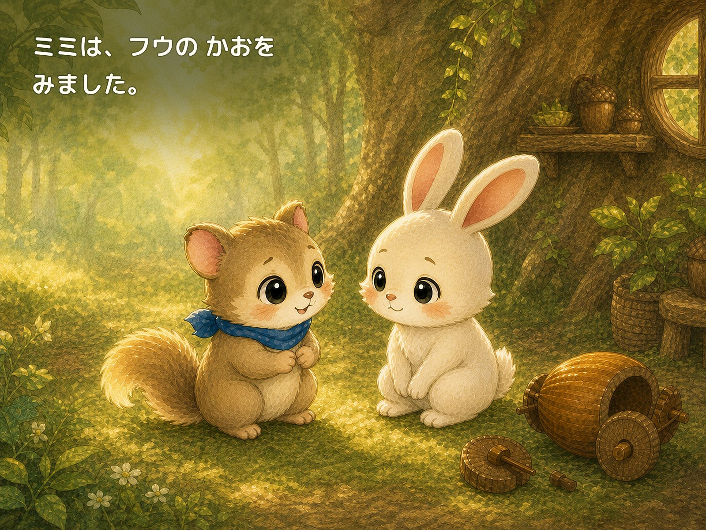

本当のことを伝える
何が起きたか、自分の言葉で相手に話します。

STORY
「ごめんね」と言いたいのに、胸がぎゅっとなって声が出ません。フウはゆっくり息をはき、ミミのそばへ行きます。
失敗を隠さずに伝えること、相手の気持ちを聞くこと、いっしょに直すことを、やさしい森の物語で描きます。
「ミミ、ごめんね。ぼくが こわして しまったんだ」

READ TOGETHER
何が起きたか、自分の言葉で相手に話します。
謝るだけで終わらず、「かなしかった」を受けとめます。
できることを考えて、関係もおもちゃも直していきます。